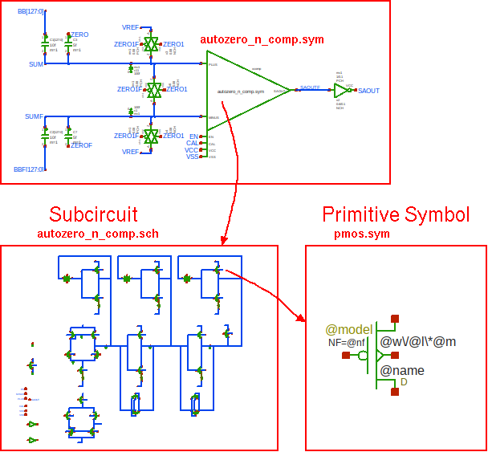

PREV
UP
NEXT
HIERARCHY, SYMBOLS AND COMPONENT INSTANCES
- Describe complex circuits by using symbols.
- A component placed in a schematic is an instance of a
symbol.
- A symbol hides the underlying circuit, showing only the interface (pins) to the parent schematic.
- Repetitive blocks (registers, amplifiers, comparators, logic gates, ...) can be used multiple times in a design.
- When creating a netlist the circuit is traversed all the way from the top level down to the lowest level leaves.
- At the lowest level we have primitive symbols, these have attributes telling the netlister how to describe them.
- A symbol definition is stored in a .sym file (inv.sym), while the circuit implementation is in a .sch file (inv.sch).
